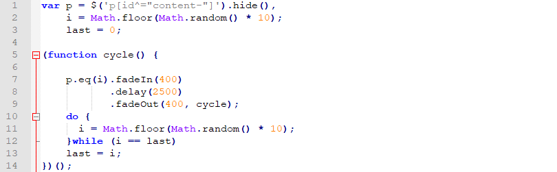
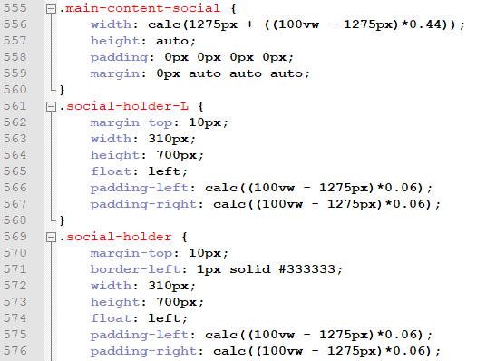

How this whole thing works
I decided to make this website as a project over the summer to help advertise myself and to learn a new skill. All of my HTML and JavaScript skills are self taught which means that this site is definitely a work in progress but it is something I am very happy with and something I will continue to work on and improve.
A lot of website design is more design than programming but the major piece of code implimented is the changing text on the home screen. There are various different lines that are cycled through in a random order with extra measures to ensure there are no repeates in succession. First of all a random number is selected using the imported math and Java librabries and the variable last is set to 0 (the random number is selected and the variable last is set before the looping part begins so the first itteration can run). An animation is played to fade in the message, wait, and then it is faded
out before a new number is generated. The generation of the new number is in a do-while loop that checks if the generated number is the same as the variable last which holds the value of the previously generated number, this is an easy way to avoid repeats. The phrases themselves are actually stored on the home screen but their defualt style is to be none which makes them invisible and disregards their position on the page. Despite this the fadeIn function overrides the defualt state allowing them to appear and after they have faded out, they deault to their original state. As the none style also ignores the position of the phrases whatever phrase is selected automatically fills the first available space, so there is no need to manipulate positioning as it is all automatially handeled.
A vital part about website design is accommodating for different sizes of screens while still looking apealing and although this is done on various parts of the website, the one i would like to highlight is on the social page. The defualt layout of the page was designed whilst 1980 pixels long, but can be reduced to 1275 pixels (if the padding of the paragraphs is reduced) before problems start so occur. Knowing that 1980 pixels is the maximum and 1275 pixels, an equation can be created to calculate the width of each element for all the window sizes inbetween. Main-content-social is the box that contains all of the content cannot be less than 1275, so that is the default number that the calculations are added to. As 1275 pixels have already been accounted for, so that is taken away from the total width of the window and this is multiplied by 0.44. You may be wondering where this 0.44 number came from but this will be explained later, for now we must look at the padding on each of the paragraphs. As we already know the box that contains all four paragraphs will never be less than 1275 so instead of using 1275 as a base, we now substract it from the total window width. We take the remaining width and get a percentage of it, this percentage is the maximum window width minus the minimum, divided by the maximum width we want the padding to be (which is 39 pixels). This percentage is divided by 4 and finally, multiplied by the width we calculated earlier (ontop of this, before it is divided by 4, this number is used on the equation above, with a little leeway to prevent errors).
There are equations like this on most pages of the website to ensure that things look good at many different aspect rations, and although it is't perfect (and mobile optimization is a way off) I'm very happy with the progress I've made so far and am glad I've managed to use equations to my advantage.